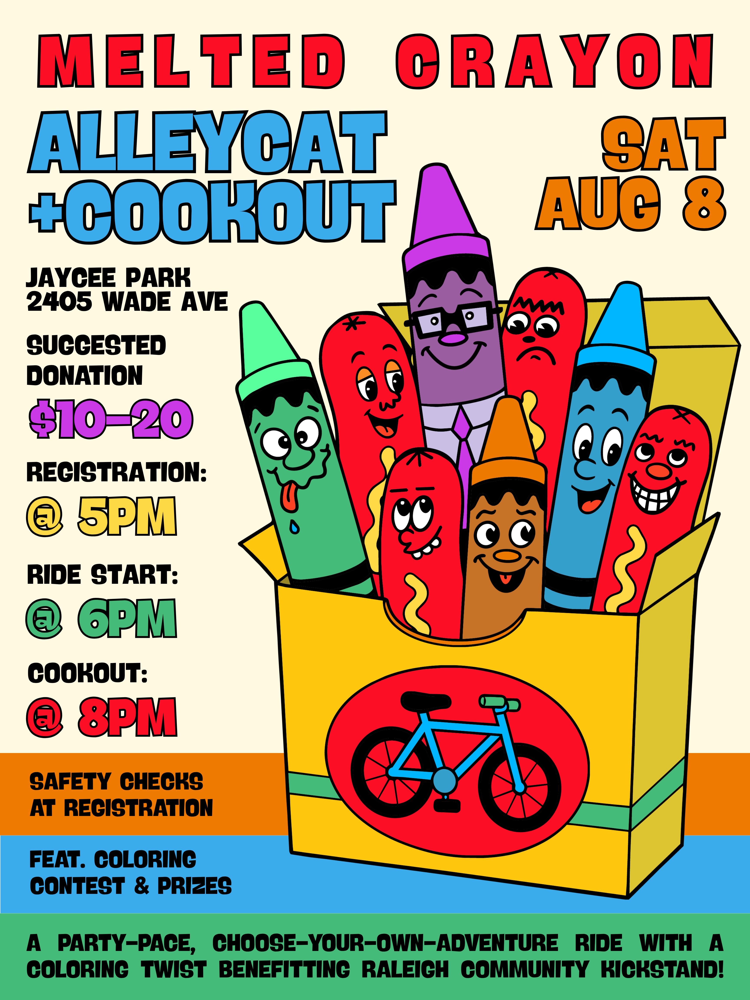

Melted Crayon Benefit Alleycat & Cookout
A party-pace, choose-your-own-adventure ride with a coloring twist benefiting Raleigh Community Kickstand!
$10 Suggested Donation
Where: Jaycee Park, 2405 Wade Ave
When: Saturday, August 8
Registration: 5:00 p.m.
Ride Start: 6:00 p.m.
Cutoff and Cookout: 8:00 p.m.
Join us for our second annual alleycat and cookout! New to alleycats? Alleycats are fun, choose-your-own-adventure rides inspired by bike couriers. You’ll get a list of stops, plan a route, and hit as many stops as you can, or want to, before the cutoff.
Each stop earns you a random crayon. At the end, use your crayons to color in a drawing. The best ones win prizes!
Ride solo or party-pace with a group. This event is perfect for beginners, newcomers, veteran townies, and everyone in between.
After the ride, stick around for a cookout with hot dogs, including vegetarian and meat options, drinks, snacks, and a coloring contest. Free bicycle safety checks will also be available during registration.
Proceeds benefit Raleigh Community Kickstand, a collective providing free bicycle repairs, bikes, and training for people in need. See you there!